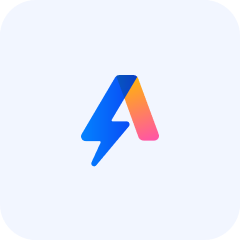
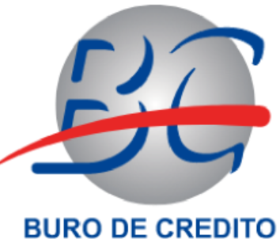
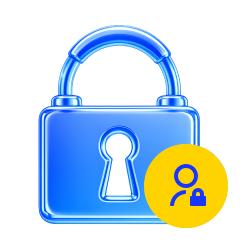
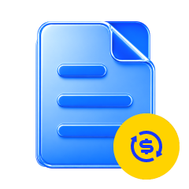

Marca:
ALA
ALA es una plataforma de préstamos en línea dirigida a usuarios mexicanos, gestionada por Quantum Wealth Solutions, S.A.P.I. de C.V., SOFOM E.N.R. Por medio de la aplicación oficial de ALA, los usuarios pueden solicitar préstamos, revisar el resultado de sus solicitudes y consultar información referente a sus cuentas, pagos y servicios.
Ver FAQs
Avisar: “Nota: Si desea verificar teléfonos, correo electrónico, horario de atención, dirección de la empresa, UNE o el contenido de los acuerdos, consulte la sección Contáctanos / Sobre nosotros / Acuerdos al final de esta página.”

Nota: El monto, plazo, costos, esquema de pago y resultado de aprobación estarán sujetos a lo mostrado en la App y a lo establecido en los acuerdos correspondientes.

Los usuarios pueden solicitar préstamos a través de la App oficial de ALA siguiendo las instrucciones de la página.

Los usuarios pueden consultar en la App el progreso de su solicitud, el resultado de la evaluación y las informaciones relacionadas.
Los usuarios pueden consultar el estado de su cuenta, el monto a pagar, las fechas de pago y las indicaciones relacionadas.
Si tiene problemas relacionados con la solicitud, la cuenta o los pagos, puede obtener ayuda a través del sitio web oficial, el centro de ayuda de la App o los canales oficiales de atención al cliente.

Le recomendamos obtener información únicamente a través del sitio web oficial y de la App oficial en Google Play y App Store. Antes de acceder a enlaces, llamadas, mensajes o solicitudes de pago de origen desconocido, verifique primero si se trata de un canal oficial.
La recopilación, uso y tratamiento de la información del usuario se rigen por el Aviso de Privacidad.
Antes de solicitar y utilizar el servicio, consulte el monto, plazo, costos y calendario de pago.
Si tiene alguna duda, le recomendamos contactar a ALA a través del sitio web oficial o los medios de atención oficiales.
No descargue la App, revele información confidencial ni gestione asuntos relacionados con su cuenta a través de canales no oficiales.
Una vez aprobada tu solicitud, ALA procesará la transferencia de inmediato. Normalmente, los fondos llegan a tu cuenta bancaria en 5 minutos, aunque en casos excepcionales puede haber retrasos. Nota: asegúrate de que la información de tu cuenta bancaria sea correcta para evitar errores en la transferencia.
El tiempo depende de la revisión, la institución bancaria y la confirmación de los datos de cuenta.
La disponibilidad de nuevas solicitudes depende de tu historial, estado de cuenta y condiciones mostradas en la App.
Mantén tus datos actualizados, consulta la App oficial y revisa las condiciones disponibles para tu cuenta.